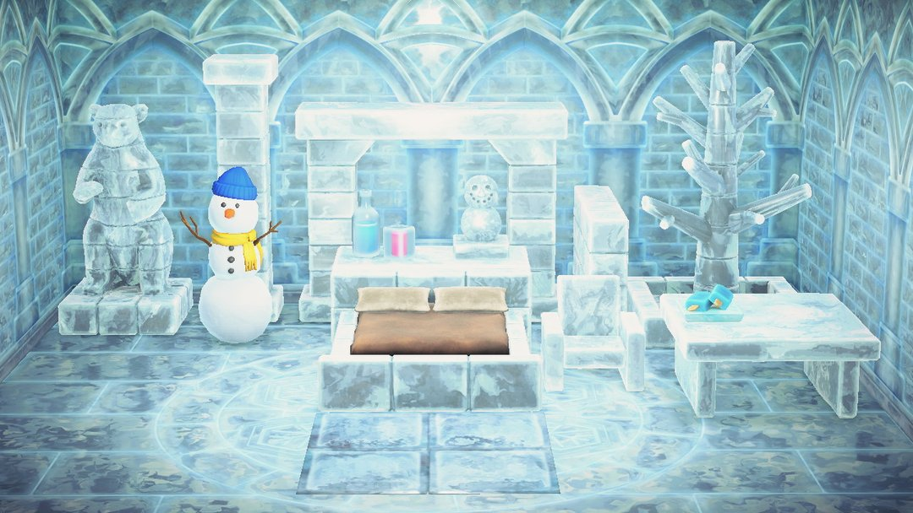

ゆきのけっしょうの季節：12月中旬〜2月下旬、けっしょうをすくってゆきだるまを作ろう
ゆきのけっしょうのすくい方、完ぺきなゆきだるまの作り方、DIYレシピ26種類（こおりシリーズ16種類を含む）
冬になって島に雪が積もると、空中をゆきのけっしょうが舞うようになります。北半球は12月11日〜2月24日、南半球は6月11日〜8月24日で、2か月以上続きます。
この季節のDIYレシピはいちばん多く、全部で26種類。そのうちこおりシリーズの16種類はゆきだるまからしかもらえず、ふうせんからは出ないので、雪の季節にゆきだるまを次々に作る必要があります。全部作るとゆきのけっしょうが161個、ゆきのだいけっしょうが16個必要です。

島で作ったゆきだるま（画像：Nookipedia）
01いつ拾える？
日付はゲーム内の時間です。南半球は北半球より半年遅れます。ゆきだるまを作るための雪玉も、この期間にしか出てきません。
| 半球 | 開始 | 終了 |
| 北半球 | 12月11日 | 2月24日 |
| 南半球 | 6月11日 | 8月24日 |
北半球のゆきのけっしょうの季節の途中には、オーナメントの季節（12月15日〜1月6日）が入っています。しんようじゅをゆすってオーナメントを集めながら、ついでにゆきのけっしょうもすくえます。
02ゆきのけっしょうのすくい方
ゆきのけっしょうは空中を舞っているので、あみを持ってねらって振ればすくえます。売値は1個200ベルで、ポケットの1枠に10個まで重ねられます。
ゆきのだいけっしょうはすくうことができず、完ぺきなゆきだるまからしかもらえません。売値は1個2,500ベル。こおりシリーズはどれもゆきのだいけっしょうを1個使うので、ふつうのゆきのけっしょうよりずっと貴重です。
ヒントゆきのけっしょうとゆきのだいけっしょうは家の収納にしまえます。季節が終わる前に多めに集めてしまっておけば、季節が過ぎても作れます。この季節のDIYレシピを覚えきれなくても大丈夫。あとで覚えたときに取り出して使いましょう。
03完ぺきなゆきだるまを作る
島には毎日雪玉が2つ出てきます。ちょうどゆきだるま1体分です。島の門が開いているときは雪玉は出てこないので、作るなら門を閉じているときにしましょう。
雪玉を押して雪の上を転がすと、だんだん大きくなります。たぬきちが教えてくれるコツは、下の玉を大きめに作っておいて、それより小さめの玉をあとからぶつけること。どちらも十分大きく転がして、頭を体よりほんの少し小さくすると完ぺきになります。
雪玉は、転がしているときに物にぶつかったり、水や穴に落ちたり、がけから転がり落ちたり、スコップやオノが当たったりすると崩れてしまいます。崩れてもあわてなくて大丈夫。建物に一度出入りすると、雪玉がまた出てくることがあります。
完ぺきなゆきだるまがくれるもの
完ぺきなゆきだるまは、ゆきのだいけっしょう1個と、こおりシリーズのDIYレシピを1つくれます。最初に作るゆきだるまは判定がゆるく、どんな形でもくれます。
ゆきだるまは島に4日間残り、そのあと3日間は毎日話しかけると、ゆきのだいけっしょうをもう1個くれます。こおりシリーズのDIYレシピを全部覚えると、完ぺきなゆきだるまからはゆきのだいけっしょうだけになります。
04DIYレシピの入手先
ゆきだるま：こおりシリーズの16種類はこの方法でしか手に入りません。1日1体なので、雪の季節はできるだけ毎日作りましょう。
ふうせん：残りの10種類はふうせんから。ゆきのけっしょうの季節に飛んでくるふうせんからこの季節のDIYレシピが落ち、全部覚えるまで出続けます。
季節の初日の案内所：北半球は12月11日、南半球は6月11日に、たぬきちかしずえが「ゆきのけっしょうのリース」のDIYレシピをくれます。もらえるのは初日だけです。
逃してしまったら：かっぺいの船で取り戻す
桟橋のかっぺいは、1日1回、1,000マイルで海へ連れ出してくれます。ときどき季節が止まったままの島に着くことがあり、冬の島もその1つで、季節の島はそれぞれ確率3%ほどです。その島ではゆきのけっしょうがすくえ、浜辺のメッセージボトルにこの季節のDIYレシピが入っていることもあります。
確率は高くないので、運だめし程度に考えておきましょう。また、自分の島でこの季節を一度経験していないと、その島には連れていってもらえません。ホテルの1つ目のVIPルームをコーディネートすると、かっぺいは1日にもう1回（ホテルチケット100枚）船を出してくれるようになり、当たるチャンスも少し増えます。
05DIYレシピ26種類の一覧
ふうせん・案内所でもらえる10種類
| DIYレシピ | 素材 |
| ゆきのけっしょうのリース 季節の初日に案内所でもらえる | ゆきのけっしょう4 |
| スノーフレークのかべがみ | ゆきのけっしょう12 |
| ひょうざんのかべ | ゆきのけっしょう10 |
| りゅうひょうのゆか | ゆきのけっしょう10 |
| ゲレンデなかべがみ | ゆきのけっしょう8 |
| ゲレンデのゆか | ゆきのけっしょう8 |
| ゆきのふるかべ Ver.1.6で追加 | ゆきのけっしょう3、いし10 |
| こおりのフロアタイル Ver.2.0で追加 | ゆきのけっしょう8 |
| こおりのさく Ver.2.0で追加 | ゆきのけっしょう5 |
| スノーフレークポシェット | ゆきのけっしょう6 |
ゆきだるまからもらえる16種類（こおりシリーズ）
| DIYレシピ | 素材 |
| こおりのベッド | ゆきのだいけっしょう1、ゆきのけっしょう10 |
| こおりのイス | ゆきのだいけっしょう1、ゆきのけっしょう3 |
| こおりのテーブル | ゆきのだいけっしょう1、ゆきのけっしょう8 |
| こおりのカウンター | ゆきのだいけっしょう1、ゆきのけっしょう5 |
| こおりのパーテーション | ゆきのだいけっしょう1、ゆきのけっしょう6 |
| こおりのはしら | ゆきのだいけっしょう1、ゆきのけっしょう3 |
| こおりのアーチ | ゆきのだいけっしょう1、ゆきのけっしょう10 |
| こおりのツリー | ゆきのだいけっしょう1、ゆきのけっしょう8 |
| こおりのアート | ゆきのだいけっしょう1、ゆきのけっしょう4 |
| アイスキャンディー | ゆきのだいけっしょう1、ゆきのけっしょう1 |
| 3だんゆきだるま | ゆきのだいけっしょう1、ゆきのけっしょう6、きのえだ2 |
| こおりのミニゆきだるま Ver.2.0で追加 | ゆきのだいけっしょう1、ゆきのけっしょう2 |
| アイスなかべがみ | ゆきのだいけっしょう1、ゆきのけっしょう8 |
| アイスなゆか | ゆきのだいけっしょう1、ゆきのけっしょう8 |
| ゆきだるまのぼうし | ゆきのだいけっしょう1、ゆきのけっしょう5 |
| こおりのステッキ | ゆきのだいけっしょう1、ほしのかけら3 |
26種類を全部作ると、ゆきのけっしょう161個、ゆきのだいけっしょう16個、ほかにいし10、ほしのかけら3、きのえだ2が必要です。
06まず作りたいもの
こおりのベッド、こおりのイス、こおりのテーブルのセット：こおりシリーズの家具は透きとおった氷でできていて、作ったあとリメイクで色を変えることもできます。ひと部屋まるごと氷の部屋にするととてもきれいです。どれもゆきのだいけっしょうを1個使うので、1つ覚えたら1つ作る、くらいのペースで十分です。
アイスなかべがみ＋アイスなゆか：氷の部屋の壁と床。こちらもゆきのだいけっしょうが必要です。
ゆきだるまのぼうし：頭にかぶれるゆきだるまの頭。冬の写真撮影が楽しくなります。
こおりのさく：ゆきのけっしょう5個で1セット。外に並べると冬らしい雰囲気になります。
ゆきのけっしょうのリース：初日にもらえるレシピ。ゆきのけっしょう4個で作れます。

こおりシリーズの家具でコーディネートした部屋（画像：Nookipedia）
07アップデートでの変化
ゆきのふるかべのDIYレシピはVer.1.6で、こおりのさく、こおりのフロアタイル、こおりのミニゆきだるまはVer.2.0で追加されました。かっぺいのボートツアーはVer.2.0で、ホテルの1つ目のVIPルームをコーディネートすると1日もう1回乗れる仕組みはVer.3.0で追加されました。
Nook Circle · App Store で「Nook Circle」を検索